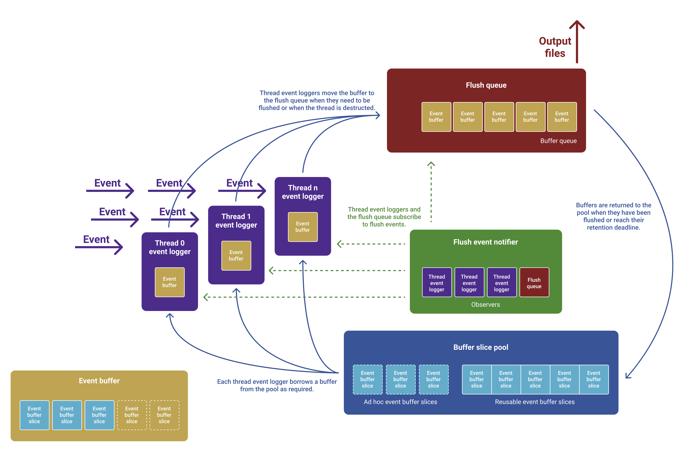

Runtime
Introduction
Spoor's runtime is responsible for efficiently buffering trace events and flushing them to disk.
API
Supported languages
Spoor's runtime is written in C++ and can be extended to work in any language.
Spoor currently offers C++ and Objective-C APIs, and we welcome
contributions that expose Spoor APIs natively to other
languages.
| Language | Header |
|---|---|
C++ |
spoor/runtime/runtime.h |
Objective-C |
spoor/runtime/wrappers/apple/Runtime.h |
Packaging
Spoor's runtime is offered in both static and dynamic variants.
Additionally, the runtime has a stub implementation with a significantly smaller binary size. This is helpful when you only want to use Spoor in development, testing, or dogfood environments (but not in production) -- just conditionally link against either the full or stub implementation during your build.
Spoor's runtime also comes packaged as an XCFramework for use on Apple platforms.
Runtime modes
Spoor's runtime can operate in two modes: Log everything mode and circular buffer mode.
Dropped events
Spoor drops events (instead of blocking the thread) if there is insufficient memory in the buffer pool to hold the event. When the buffer pool reaches capacity, the runtime flushes each thread in an attempt to reclaim memory.
Log everything
As the name suggests, all events are flushed to disk. A flush event can occur manually, when a thread is relinquished, when the buffer pool reaches capacity, or when the runtime is deinitialized.
Circular buffer
In circular buffer mode, new events on a thread override old events when the thread's circular buffer reaches capacity. When a thread is relinquished, the flush queue retains the thread's events for a configurable duration in anticipation of a manual flush event. Buffered events are flushed to disk when you issue a manual flush event.
Trace
Trace files are composed of a header followed by n events.
Source code
Header
Magic number
0xc853706f6f720d0a1a0a, Spoor's 80-bit trace file magic number.
Endianness
Value representing the endianness of the system that generated the trace file.
Compression strategy
Value representing the compression strategy used to compress the trace events in the file.
Version
Value representing the trace file's version.
Session ID
Identifies the session that captured the trace events. The session ID is a random number by default to uniquely identify each run but is configurable to easily aggregate traces across multiple runs or processes.
Process ID
Identifies the process that captured the trace events.
Thread ID
Identifies the thread that captured the trace events within the process.
System clock timestamp
Number of nanoseconds since the system clock's epoch used to derive the wall clock time.
Steady clock timestamp
Number of nanoseconds since the steady clock's epoch. The value is recorded shortly after (effectively at the same time as) the system clock timestamp and is used to convert the steady clock's time to the system clock's time.
Event count
Number of events in the trace file.
Padding
Empty space to pad the header to 64 bytes.
Event
Trace events are designed to be very small, just 24 bytes, and are composed of three pieces of data.
Event ID
The event ID represents the type of event and are represented by a 32-bit integer. The two most common events are function entry and function exit events.
Namespace
Events with a most significant bit of 0 are reserved.
Timestamp
The timestamp is number of nanoseconds that have elapsed since the steady clock's epoch.
Payload
The payload is a fixed 96 bits (composed of a 64-bit integer and a 32-bit integer) for an event to store auxiliary data.
The payload is fixed size to encourage developers to efficiently store their event's data (instead of, for example, logging a string). Two common strategies to fit an event into the payload include symbolizing static strings (e.g., log messages) and hashing dynamic strings (e.g., account email addresses).
Architecture

Event buffer path
Notice the beautiful circular path that the event buffer follows.
Memory management
Spoor events are buffered on each thread before being flushed to disk.
Buffer pool
Event buffers are acquired from a global object pool and come in two varieties: static and dynamic. Static buffers are allocated during Spoor's initialization and deallocated during deinitialization. Dynamic buffers are allocated adhoc and deallocated as soon as they are returned to the pool.
An application can have a combination of static and dynamic buffers in the pool. This is useful when your application has a predicable and constant event volume. In this case, you reserve a certain amount of memory in the static pool. However, if your app also has occasional spikes in event volume and you do not wish to drop events or over-allocate the static pool, you can choose to dynamically allocate buffers to hold the remaining events.
The buffer's behavior is highly configurable so that you can tune Spoor's runtime behavior for your use case.
Thread logger
Each thread has a thread-local buffer into which it logs events. A thread's buffer has a maximum capacity, however, it does not request the full capacity from the global buffer pool all at once. Instead, it acquires the buffer in slices. This ensues that low-volume background threads do not over-reserve capacity from the buffer pool.